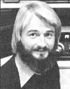

There is, as the old saying goes, "no such thing as a free lunch". Crystal radio sets, however, come very close to disproving that "rule". Such simple receivers need no connection to the AC lines ... or even to a battery! In fact, crystal units take all the power they need from the arriving signal itself ... and that amount of energy 4 typically less Man a millionth of a watt!
Crystal sets-which date back to the early days of radiowere widely used before the invention of vacuum tubes and transistors ... and they still make perfect sense for back-to-the-landers and those who want to wean themselves totally from electric energy. Of course, the primitive units are good emergency receivers, too.
Over the years, I've had a number of inq&des about these old-fashioned radios from MOTHER's readers, butuntil recently-I didn't know of any present-day source of "serious" crystal sets or parts. Then along came the solution in a letter from Joe Ferris of Los Fresnos, Texas.
Joe wrote to let me know that crystal sets (and other facets of old-time radio) are still alive and well ... thanks to the atforts of a devoted couple-Mr. and Mrs. Elmer Osterhoudt-who started a little business called Modern Radio Labs way back in 1932. One of the first products that the Osterhoudts marketed was the MRL No. 2 Long Distance Crystal Set. And today-47 years later-they still offer the No. 2! The price has an oldtime niceness about it, too: just $10.50 completely wired, or $7.50 in kit form.
Of course-in order to operate one of these venerable radios-you'll need an outdoor antenna ... the longest and highest wire you can conveniently string up (make it 30 feet high and 150 feet long ... if you have the room). You'll also have to make a ground connection ... to a coldwater pipe, or to a metal stake driven several feet down into moist earth. Add to that a set of sensitive headphones ... not the 8-ohm stereo variety, but the oldfashioned, super-sensitive 20,000- to 30,000ohm units. (MRL offers such phones, ranging in price from $4.50 to $9.60 a set. Get the best you can afford.)
Finally, you'll need a pair of fairly good ears. Crystal sets are not loud. (A millionth of a watt isn't going to produce deafening sound!) If explosions, jet planes, or 110 decibel rock music have impaired your hearing, crystal sets may not be for you.
The performance of the old-time receiv ers varies widely ... depending upon how good your antenna and ground are, and your proximity to strong local stations. Of course, you'll have no trouble picking up nearby "channels" but the close-to-home radio signals will often be strong enough to mask the reception of distant stations. Owners who aren't troubled by local AM broadcasts-and who use long, high antennas-have reported nighttime reception of 50,000-watt AM stations from distances of 1,000 miles and more! These folks also occasionally pick up international shortwave broadcasts from overseas. (Joe says he's received programs from stations more than 5,000 miles away with his MRL No. 2!)
To find out more about crystal sets and related products, send 50 cents to Modern Radio Labs (Dept. TMEN, P.O. Box 1477, Garden Grove, California 92642) for a copy of their fascinating, 52-page catalog. The book will let you step back into the radio world of a half-century ago crystal sets, one-tube receivers, low-cost handbooks on various "lost" aspects of radio art, and even rare components such as plug-in coils and variometers.
The Osterhoudts make many of the parts themselves, and their prices are unbelievably low. It's sure nice to see a technically oriented business dedicated to something other than the almighty buck!
Have you noticed the increased public interest in what the alternative community is up to? MOTHER's circulation, for example, keeps climbing ... nearly 3,000,000 people now read each issue! And over 900 radio stations carry this magazine's three-minute programs.
We New Directions hams have-for a long time now-also shared "alternative news" with each other during our regular on-air Roundtables. With a little extra ef fort on our part, we could perform a real public service by passing these Hems along to the growing number of likeminded broadcast stations.
And just which stations might be interested in "our" sort of news? For starters, I'm certain that many of North America's 500 college and university broadcasters would jump at the chance to receive information about "alternative" community activities. In addition, the 900-plus stations (listed on pages 46 and 47) Nat carry MOTHER's three-minute radio programs would be likely candidates for this roundtable idea. And finally, such items would most certainly be well received by all the following members of the National Federation of Community Broadcasters:
KAOS, Olympia, Washington 98505
KAXE, Grand Rapids, Minnesota 55744
KBOO, Portland, Oregon 97204
KFAI, Minneapolis, Minnesota 55407
KFCF, Fresno, California 93714
KFSK, Petersberg, Alaska 99833
KGNU, Boulder, Colorado 80306
KOPN, Columbia, Missouri 65201
KOTO, Telluride, Colorado 81435
KPFA, Berkeley, California 94704
KPFK, Universal City, California 91608
KPFT, Houston, Texas 77006
KPOO, San Francisco, California 94101
KTOO, Juneau, Alaska 99801
KZUM, Lincoln, Nebraska 68510
WAIF, Cincinnati, Ohio 45206
WBAI New York, New York 10018
WCUW Worcester, Massachusetts 01610
WEHB, Grand Rapids, Michigan 49506
WEVL, Memphis, Tennessee 38101
WLNK, Columbus, Mississippi 39701
WLNV, Derby, Connecticut 06418
WORT, Madison, Wisconsin 53704
WPFW, Washington, D.C. 20009
WRFG, Atlanta, Georgia 30306
WYEP, Pittsburgh, Pennsylvania 15213
WYSO, Yellow, Springs, Ohio 45387
If you're a ham who lives near one of these stations-and would like to help launch a public service roundtable-why not give the outfit's news director a call and see if he or she is interested?
The New Directions Roundtable West (3898 kHz, 8:00 p.m. Pacific Time on Sundays, Tuesdays, and Thursdays) is ready to pass news items along. If you can't check into that net, write me ... and we'll try to start one that you can hook up with. (For additional information on George Wood's Alternative News Net idea, see the New Directions Radio columns in MOTHER NOS. 51 and 55.)
Peace,
Cop Macdonald (VE1 BFL)
P.O. Box 2941
Charlottetown Prince Edward Island
Canada C1 A 8C5
New Directions Radio is an international network of radio amateurs concerned with those ways of using ham radio (and related modes of communicating) that promote our own growth as individuals, and which we perceive as helping to create a more aware, more caring, and more responsible human society. We encourage all who share these interests to work with us. A current schedule of on-the-air activities is included in each issue of the bi-monthly New Directions Roundtable Newsletter published by Randy Brink (WD0HNF) and "Bo" Bogardus (W6HSE) as a service to the rest of us. Send one 9-1/2- by 4-inch, self-addressed, stamped envelope (or 25 cents) for each issue desired to Randy Brink, 1095 Western Drive 178C, Colorado Springs, Colorado 80915.
|
 Photo by Madaleine MacDonald |
|
|